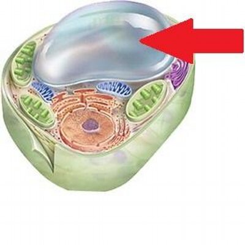
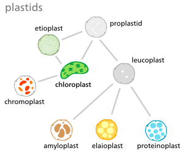

High School Biology

You may have been told proteins are good for you. Do these look good to you?

Proteins
 A protein is an organic compound made up of small
molecules called amino acids. There are 20 different
amino acids commonly found in the proteins of living
organisms. Small proteins may contain just a few hundred
amino acids, whereas large proteins may contain thousands of amino acids.
The largest known proteins are titins, found in muscle, which are
composed from over 27,000 amino acids.
A protein is an organic compound made up of small
molecules called amino acids. There are 20 different
amino acids commonly found in the proteins of living
organisms. Small proteins may contain just a few hundred
amino acids, whereas large proteins may contain thousands of amino acids.
The largest known proteins are titins, found in muscle, which are
composed from over 27,000 amino acids.
Protein Structure
 When amino acids bind together,
they form a long chain called a polypeptide. A protein
consists of one or more polypeptide chains. A protein may
have up to four levels of structure. The lowest level, a protein’s
primary structure, is its sequence of amino acids. Higher levels of
protein structure are described in Figure below. The complex structures of different
proteins give them unique properties, which they need to carry out their various jobs in living organisms.
When amino acids bind together,
they form a long chain called a polypeptide. A protein
consists of one or more polypeptide chains. A protein may
have up to four levels of structure. The lowest level, a protein’s
primary structure, is its sequence of amino acids. Higher levels of
protein structure are described in Figure below. The complex structures of different
proteins give them unique properties, which they need to carry out their various jobs in living organisms.
Function of Proteins
Plant Cell Structure Proteins play many important roles in living things.
Some proteins help cells keep their shape (structural proteins),
some, such as connective and motor proteins, make up muscle tissues,
and some transport items in and out of cells (transport proteins). Some
proteins act as signals, and other proteins receive those signals. Enzymes are
proteins that speed up chemical reactions in cells. Other proteins are antibodies,
which bind to foreign substances such as bacteria and target them for destruction.
Still other proteins carry messages or transport materials. For example, human red blood
cells contain a protein called hemoglobin, which binds with oxygen.
Hemoglobin allows the blood to carry oxygen from the lungs to cells throughout the body.
Proteins play many important roles in living things.
Some proteins help cells keep their shape (structural proteins),
some, such as connective and motor proteins, make up muscle tissues,
and some transport items in and out of cells (transport proteins). Some
proteins act as signals, and other proteins receive those signals. Enzymes are
proteins that speed up chemical reactions in cells. Other proteins are antibodies,
which bind to foreign substances such as bacteria and target them for destruction.
Still other proteins carry messages or transport materials. For example, human red blood
cells contain a protein called hemoglobin, which binds with oxygen.
Hemoglobin allows the blood to carry oxygen from the lungs to cells throughout the body.
All living organisms need to take substances from their environment to obtain energy, to grow and to stay healthy.
Many plant cells are green. Why? Plant cells also usually have a distinct shape. The rigid exterior around the cells is necessary to allow the plants to grow upright. Animal cells do not have these rigid exteriors. There are other distinct differences between plant and animal cells. These will be the focus of this concept.
 Most organelles are common to both animal and plant cells. However,
plant cells also have features that animal cells do not have: a cell wall,
a large central vacuole, and plastids such as chloroplasts.
Plants have very different lifestyles from animals, and
these differences are apparent when you examine the structure
of the plant cell. Plants make their own food in a process called photosynthesis.
They take in carbon dioxide (CO2) and water (H2O) and convert them into sugars.
Most organelles are common to both animal and plant cells. However,
plant cells also have features that animal cells do not have: a cell wall,
a large central vacuole, and plastids such as chloroplasts.
Plants have very different lifestyles from animals, and
these differences are apparent when you examine the structure
of the plant cell. Plants make their own food in a process called photosynthesis.
They take in carbon dioxide (CO2) and water (H2O) and convert them into sugars.
A cell wall is a rigid layer that is found outside the cell membrane and surrounds the cell. The cell wall contains not only cellulose and protein, but other polysaccharides as well. The cell wall provides structural support and protection. Pores in the cell wall allow water and nutrients to move into and out of the cell. The cell wall also prevents the plant cell from bursting when water enters the cell. Microtubules guide the formation of the plant cell wall. Cellulose is laid down by enzymes to form the primary cell wall. Some plants also have a secondary cell wall. The secondary wall contains a lignin, a secondary cell component in plant cells that have completed cell growth/expansion.
Most mature plant cells have a central vacuole that occupies more than 30% of the cell's volume. The central vacuole can occupy as much as 90% of the volume of certain cells. The central vacuole is surrounded by a membrane called the tonoplast. The central vacuole has many functions. Aside from storage, the main role of the vacuole is to maintain turgor pressure against the cell wall. Proteins found in the tonoplast control the flow of water into and out of the vacuole. The central vacuole also stores the pigments that color flowers. The central vacuole contains large amounts of a liquid called cell sap, which differs in composition to the cell cytosol. Cell sap is a mixture of water, enzymes, ions, salts, and other substances. Cell sap may also contain toxic byproducts that have been removed from the cytosol. Toxins in the vacuole may help to protect some plants from being eaten.
Plant plastids are a group of closely related membrane-bound organelles that carry out many functions. They are responsible for photosynthesis, for storage of products such as starch, and for the synthesis of many types of molecules that are needed as cellular building blocks. Plastids have the ability to change their function between these and other forms. Plastids contain their own DNA and some ribosomes, and scientists think that plastids are descended from photosynthetic bacteria that allowed the first eukaryotes to make oxygen. The main types of plastids and their functions are:
Chroloplasts are the organelle of photosynthesis. They capture light energy from the sun and use it with water and carbon dioxide to make food (sugar) for the plant.
Etioplasts are chloroplasts that have not been exposed to light. They are usually found in flowering plants grown in the dark. If a plant is kept out of light for several days, its normal chloroplasts will actually convert into etioplasts.
Elaioplasts are a type of leucoplast that is specialized for the storage of lipids in plants. Elaioplasts house oil body deposits as rounded plastoglobuli, which are essentially fat droplets.
All plastids are derived from proplastids, which are present in the meristematic regions of the plant. Proplastids and young chloroplasts commonly divide by binary fission, but more mature chloroplasts also have this capacity.
Chromoplasts make and store pigments that give petals and fruit their orange and yellow colors.
Leucoplasts do not contain pigments and are located in roots and non-photosynthetic tissues of plants. They may become specialized for bulk storage of starch, lipid, or protein. However, in many cells, leucoplasts do not have a major storage function. I nstead, they make molecules such as fatty acids and many amino acids.
Proteinoplasts are specialized organelles found only in plant cells. Proteinoplasts belong to a broad category of organelles known as plastids. Because they lack pigment, proteinoplasts are more specifically a kind of leucoplast.
Amyloplasts are non-pigmented organelles found in some plant cells. They are responsible for the synthesis and storage of starch granules, through the polymerization of glucose. Amyloplasts also convert this starch back into sugar when the plant needs energy.
The only person who is educated is the one who has learned how to learn and change.